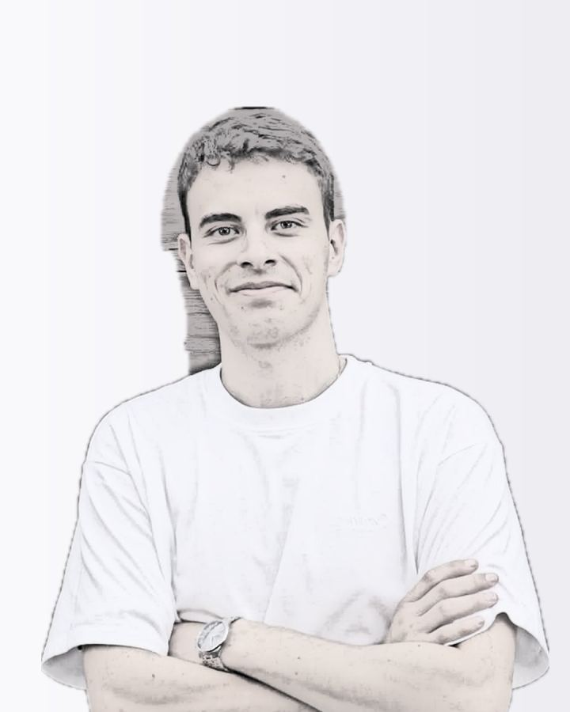
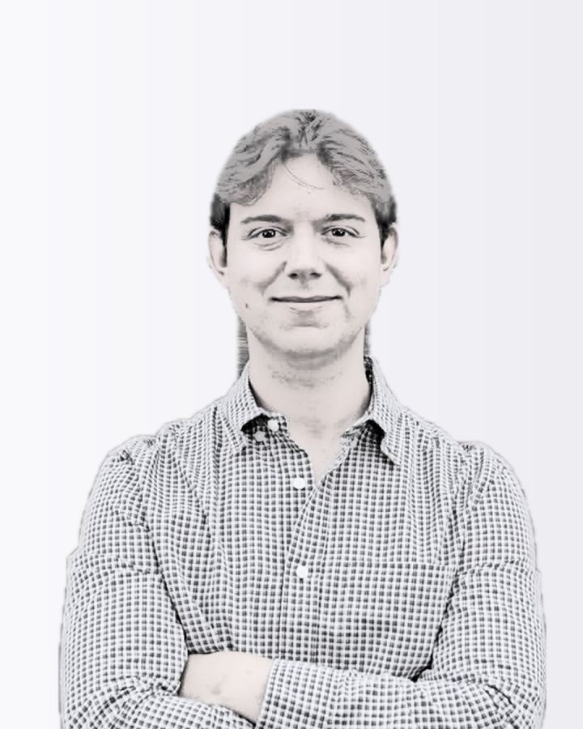
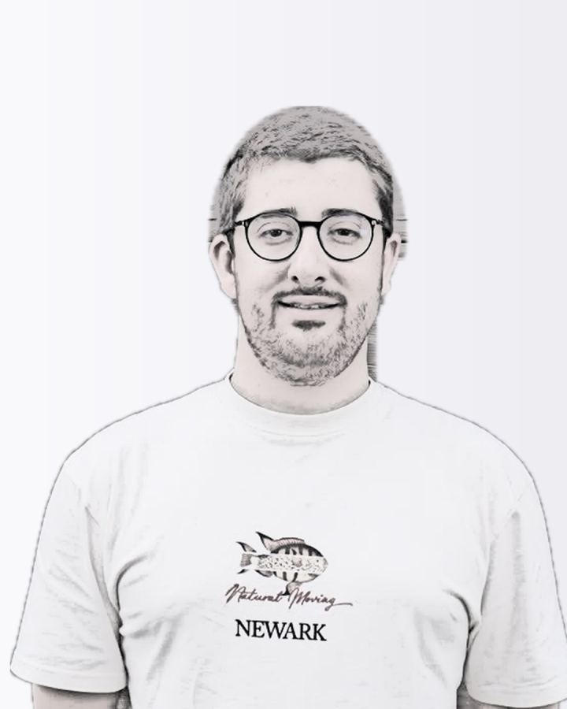
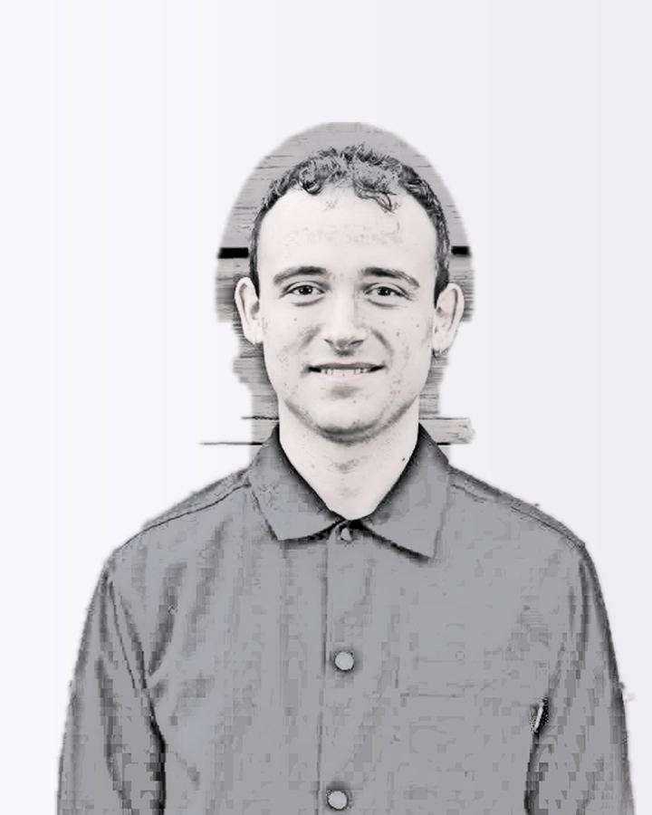
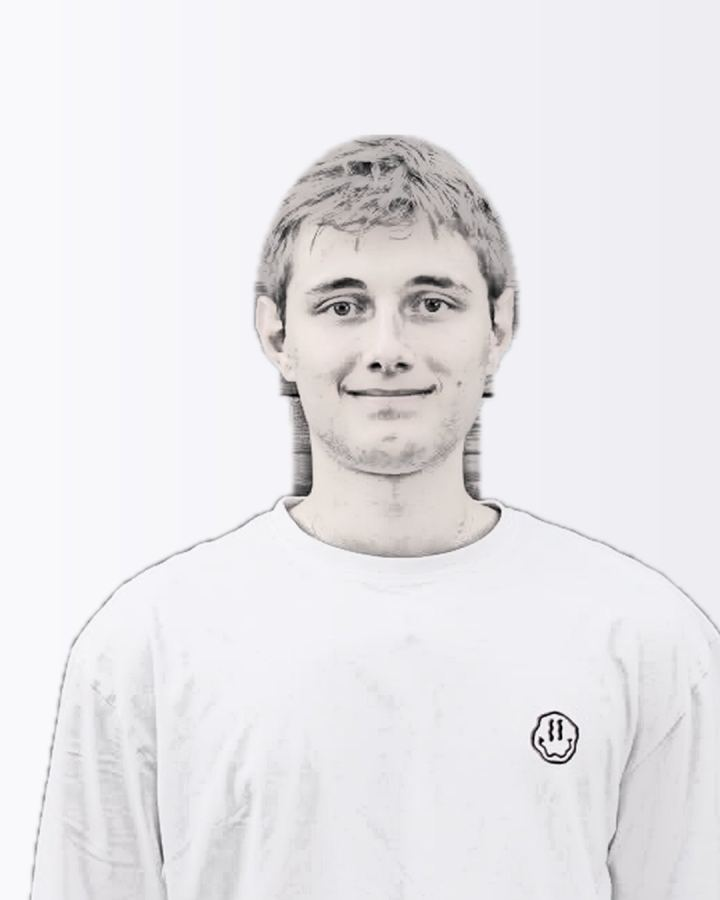

Briefing de rodaje · TenderYou · viernes 6 de noviembre
Fotos del equipo para usarlas en todas partes
Una mañana, de 8:30 a 13:00, en dos edificios. Aquí tenéis qué fotos vamos a hacer, a quién y a qué hora le toca, qué ropa traer y lo poco que necesitamos de vosotros. Si queréis cambiar algo, decídnoslo hoy.
Dibujadas a partir de vuestras fotos y de los espacios reales. Sirven para ver el encuadre, la luz y el aire para el texto. Las poses y la ropa son orientativas.
1 / 44
A1 Retrato de busto, mirando a cámara · MiguelA1 Retrato de busto, mirando a cámara · DiegoA1 Retrato de busto, mirando a cámara · RamónA1 Retrato de busto, mirando a cámara · NicolásA1 Retrato de busto, mirando a cámara · IvánA1 Retrato de busto, mirando a cámara · AlfonsoA1 Retrato de busto, mirando a cámara · JavierA1 Retrato de busto, mirando a cámara · PedroA1 Retrato de busto, mirando a cámara · MarioA1 Retrato de busto, mirando a cámara · AlejandroA1 Retrato de busto, mirando a cámara · JoséA2 Plano medio con aire a un lado · MiguelA2 Plano medio con aire a un lado · DiegoA2 Plano medio con aire a un lado · RamónA2 Plano medio con aire a un lado · NicolásA2 Plano medio con aire a un lado · IvánA2 Plano medio con aire a un lado · AlfonsoA2 Plano medio con aire a un lado · JavierA2 Plano medio con aire a un lado · PedroA2 Plano medio con aire a un lado · MarioA2 Plano medio con aire a un lado · AlejandroA2 Plano medio con aire a un lado · JoséA3 Cuerpo entero sobre fondo liso, para recortar · MiguelA3 Cuerpo entero sobre fondo liso, para recortar · DiegoA3 Cuerpo entero sobre fondo liso, para recortar · JavierA3 Cuerpo entero sobre fondo liso, para recortar · MarioA4 Miguel, retrato para prensaB1 Equipo completoB2 Por áreas: desarrollo, y ventas con MiguelB2 Por áreas: desarrollo, y ventas con MiguelC1 El equipo trabajando en sus puestosC2 Dos personas decidiendo en la mesa (dos tomas)C2 Dos personas decidiendo en la mesa (dos tomas)C3 Una persona sola con el portátil junto a la ventanaC4 Manos con un pliego impreso y el portátil, sin caraC5 De pie, mirando el móvilD1 Comercial en una llamada · DiegoD1 Comercial en una llamada · RamónD1 Comercial en una llamada · NicolásD2 Demo: un comercial enseña una licitación en pantallaD3 Sonriendo al móvil, como cuando llega un avisoD4 El equipo de ventas conversandoE1 Miguel bajo la arqueríaE2 Miguel caminando bajo los arcos
Dónde se van a usar
Cada foto sale pensando en su sitio
No hacemos «fotos de equipo» en general: cada toma responde a un sitio donde vuestras caras ya aparecen o van a aparecer. Así se verían con el storyboard puesto en su sitio.
A1 · 4:5 · también en blanco y negro
tenderyou.com/sobre-nosotros
Sobre nosotros
Detrás de los datos hay un equipo al que puedes llamar

Miguel LópezCEO

Diego RollánDirector de Ventas

Iván GarcíaDirector Tecnológico

Alfonso AlonsoDirector de Desarrollo

Javier NovellaProgramador jefe
Ramón SomolinosEquipo comercial
A1 en círculo · B1 para la página de empresa
Miguel LópezCEO en TenderYou · Licitaciones públicas con IAGijón, Asturias · 500+ contactosConectar
Diego RollánDirector de Ventas en TenderYouGijón, Asturias · 500+ contactosConectar
Iván GarcíaDirector Tecnológico en TenderYouGijón, Asturias · 500+ contactosConectar
D1 en 4:5 · E2 en 9:16
tenderyouPublicidad
¿Te llamamos y te enseñamos tus licitaciones?
Más información
Miguel López, CEO de TenderYou
C3 de cabecera · A1 en la firma
TenderYou <hola@tenderyou.com>Tienes licitaciones nuevas que encajan contigo
Hola, esta semana han salido expedientes que encajan con lo que hacéis…
Diego RollánDirector de Ventas · TenderYou
E1 y A4 en alta resolución
Prensa · Economía
La startup gijonesa que quiere automatizar las licitaciones públicas
Miguel López, CEO de TenderYou, en la Laboral.
A2 en 16:9 con aire
Quién está detrás
Un equipo de Gijón que conoce la contratación pública
Cómo se van a ver
Gente real trabajando, con luz de ventana
La contratación pública tiene fama de gris. Las fotos tienen que contar lo contrario sin perder confianza: un equipo cercano al que puedes poner cara y llamar.
No posáis: trabajáisUna llamada, revisar un pliego, enseñar algo en pantalla.
Luz de ventanaNatural y suave, la misma en todos los retratos.
Color sobrioCálido, con un toque de lila. Retratos también en B/N.
Cerca y claroCaras que se reconocen hasta en una miniatura.
Aire para el textoUn tercio libre en las fotos que llevan titular.
Las escenas. Nadie mira a cámara y la risa es de verdad.Dos personas decidiendo. Colores lisos y un primer término desenfocado.El retrato de busto. Pared clara, luz de ventana de lado y aire sobre la cabeza.Concentración real. Las manos cuentan qué hacen sin señalar la pantalla.
Referencias de empresas de software con IA para sectores técnicos (Harvey, Maisa y ElevenLabs), para la luz, el encuadre y la actitud.
Un retrato por personaMisma luz, mismo fondo y misma distancia, para que la serie se vea como un equipo.
11 retratos en colorPara LinkedIn, la firma de correo, los posts de bienvenida y la prensa.
y en blanco y negroLa misma foto, para la web, que hoy ya va en blanco y negro.
Lista de fotos
Lo que nos llevamos seguro
Ordenadas por sitio y por persona para no perder tiempo. Pulsa cualquier storyboard para verlo en grande.
Bloque A · RetratosEdificio Impulsa · 8:55 – 10:05
A1
Retrato de busto, mirando a cámara
Quién
Cada persona del equipo, una a una
Dónde
Edificio Impulsa, junto a una ventana, con fondo claro y liso
Para qué
Web (Sobre nosotros y «Habla con un experto»), foto de perfil de LinkedIn, firma de correo, posts de bienvenida y prensa
Formato
Vertical 4:5, con aire sobre la cabeza: de la misma foto sale el 1:1 y el círculo. En color y en blanco y negro
A2
Plano medio con aire a un lado
Quién
Cada persona, en el mismo turno que A1
Dónde
El mismo set
Para qué
Presentaciones a clientes, artículos y premios en horizontal, anuncios con el texto al lado y cabeceras
Formato
Horizontal 3:2 (sale 16:9). La persona en un tercio y dos tercios libres para el texto
A3
Cuerpo entero sobre fondo liso, para recortar
Quién
Miguel, Diego y dos personas de desarrollo
Dónde
El mismo set, con más distancia
Para qué
Anuncios y carruseles con la persona recortada sobre el fondo de marca, y correos
Formato
Vertical, con fondo liso que contraste con el pelo y la ropa
A4
Miguel, retrato para prensa
Quién
Miguel (con americana, si la trae)
Dónde
El mismo set
Para qué
Notas de prensa, premios, Lanzadera y programas, ponencias y entrevistas
Formato
Una vertical y una horizontal, con fondo limpio
Bloque B · EquipoExterior del Impulsa · 10:05 – 10:25
B1
Equipo completo
Quién
Todo el equipo
Dónde
Fuera del Edificio Impulsa, con la fachada de madera detrás
Para qué
Web, prensa, premios, LinkedIn de la empresa y presentaciones
Formato
Horizontal, con aire arriba para sacar también un 4:5
B2
Por áreas: desarrollo, y ventas con Miguel
Quién
Cada área por separado
Dónde
El mismo sitio, justo después de B1
Para qué
Presentaciones («quién te atiende»), posts y web
Formato
Horizontal
Bloque C · Desarrollo trabajandoOficina del Impulsa · 10:25 – 11:05
C1
El equipo trabajando en sus puestos
Quién
Desarrollo, cada uno en su sitio
Dónde
Vuestra oficina del Impulsa
Para qué
Web, posts y presentaciones
Formato
Horizontal amplio, con aire arriba
C2
Dos personas decidiendo en la mesa (dos tomas)
Quién
Dos personas de desarrollo; en la segunda toma, otras dos
Dónde
Mesa de la oficina o sala de reuniones
Para qué
Correos del ciclo de vida y anuncios
Formato
Horizontal
C3
Una persona sola con el portátil junto a la ventana
Quién
Una persona de desarrollo
Dónde
Junto a la ventana más luminosa
Para qué
Correos y anuncios con texto encima
Formato
Vertical 4:5 y horizontal, con un tercio libre
C4
Manos con un pliego impreso y el portátil, sin cara
Quién
Cualquiera
Dónde
Mesa con luz de ventana
Para qué
Correos y piezas que explican el producto
Formato
Desde arriba o en tres cuartos
C5
De pie, mirando el móvil
Quién
Una persona de desarrollo
Dónde
Pasillo o junto a la ventana
Para qué
Correos de avisos y anuncios
Formato
Vertical; el móvil se ve por detrás
Bloque D · Ventas trabajandoOficina de ventas, Laboral · 11:25 – 12:05
D1
Comercial en una llamada
Quién
Diego, Ramón y Nicolás (una toma cada uno)
Dónde
Oficina de ventas, Laboral
Para qué
«Detrás de los datos hay un equipo al que puedes llamar»: web, anuncios de demo y correos
Formato
Horizontal con aire y vertical
D2
Demo: un comercial enseña una licitación en pantalla
Quién
Dos comerciales
Dónde
Oficina de ventas
Para qué
Anuncios de demo, presentaciones y outbound
Formato
Horizontal
D3
Sonriendo al móvil, como cuando llega un aviso
Quién
Un comercial
Dónde
Oficina de ventas o pasillo
Para qué
Correos de avisos y anuncios
Formato
Vertical
D4
El equipo de ventas conversando
Quién
Diego, Ramón y Nicolás
Dónde
Oficina de ventas
Para qué
Web, posts y presentaciones
Formato
Horizontal
Bloque E · Miguel en la LaboralLaboral · 12:05 – 12:35
E1
Miguel bajo la arquería
Quién
Miguel
Dónde
Soportales y columnas de la Laboral, a la sombra
Para qué
Prensa, premios, entrevistas y miniaturas de vídeo
Formato
Horizontal con aire a un lado; la arquitectura desenfocada detrás
E2
Miguel caminando bajo los arcos
Quién
Miguel
Dónde
Soportales de la Laboral
Para qué
Portadas de carrusel, stories y artículos
Formato
Vertical 4:5 y 9:16
Extras
Si el día acompaña
Las hacemos en el margen del final o aprovechando huecos. Si no da tiempo, no falta nada: todo lo necesario está en la lista de arriba.
X1 Retratos naturales entre toma y tomaCarrusel «Las personas detrás de TenderYou» y postsX2 El equipo caminando por la rampa del ImpulsaWeb y LinkedIn de empresaX3 Una persona en el pasillo de madera del ImpulsaFondos de web y presentacionesX4 Detalles: manos, teclado y TenderYou en pantallaRecursos para posts y vídeosX5 Miguel y Diego caminando por la LaboralArtículos y entrevistasX6 Miguel en primer plano para miniaturasYouTube
Horario
Quién tiene que estar y cuándo
Cada persona solo deja su trabajo durante su retrato y la foto de equipo. El resto del tiempo seguís trabajando y os fotografiamos en vuestro sitio.
Llegada al Edificio Impulsa y montaje del set de retratosEdgar (y Miguel para la prueba de luz)
Retratos de ventas · A1 A2 A3Diego, Ramón y Nicolás · unos 6 min cada uno
Retratos de Miguel · A1 A2 A3 A4Miguel
Retratos de desarrollo · A1 A2 (y A3 de dos personas)Iván, Alfonso, Javier, Pedro, Mario, Alejandro y José · unos 5 min cada uno
Fotos de equipo fuera del Impulsa · B1 B2Todo el equipo
Desarrollo trabajando · C1 a C5Desarrollo. Ventas vuelve a la Laboral
Recoger y trasladarnos a la Laboral—
Ventas trabajando · D1 a D4 (10 min para despejar el fondo)Diego, Ramón y Nicolás
Miguel en la Laboral · E1 E2Miguel
Margen: repetir lo que haga falta y extrasQuien haga falta
Fin de las fotos. Por la tarde, grabación de vídeo (briefing aparte)Diego y otro comercial
Si algo se tuerce, lo primero que cae son los extras, nunca los retratos ni la foto de equipo.
Si llueve, la foto de equipo se hace dentro del Impulsa y la de Miguel bajo los soportales de la Laboral, que están cubiertos. Si vamos con retraso, hacemos menos tomas por escena, pero todas las escenas.
El equipo
Confirmadnos la lista
Es la lista con la que hemos planificado. Si falta alguien, sobra alguien o alguien no puede a esa hora, decídnoslo y lo recolocamos.
Persona
Rol
Cuándo le necesitamos
Fotos
Miguel López
CEO
Todo el día
A1 · A2 · A3 · A4 · B · E
Diego Rollán
Director de Ventas
8:55 – 10:25 y 11:25 – 12:05
A1 · A2 · A3 · B · D
Ramón Somolinos
Equipo comercial
8:55 – 10:25 y 11:25 – 12:05
A1 · A2 · B · D
Nicolás Menéndez
Equipo comercial
8:55 – 10:25 y 11:25 – 12:05
A1 · A2 · B · D
Iván García
Director Tecnológico
9:25 – 11:05
A1 · A2 · B · C
Alfonso Alonso
Director de Desarrollo
9:25 – 11:05
A1 · A2 · B · C
Javier Novella
Programador jefe
9:25 – 11:05
A1 · A2 · B · C
Pedro Limeres
Programador full stack
9:25 – 11:05
A1 · A2 · B · C
Mario Orviz
Programador full stack
9:25 – 11:05
A1 · A2 · B · C
Alejandro Jardón
Desarrollo
9:25 – 11:05
A1 · A2 · B · C
José Rodríguez
Desarrollo
9:25 – 11:05
A1 · A2 · B · C
Localizaciones
Impulsa por la mañana, la Laboral a mediodía
Exterior del Impulsa. Madera y hormigón: el fondo de la foto de equipo.Vuestra oficina del Impulsa. Ventanal y paredes blancas para retratos y escenas.Pasillos de madera y patio. Para los extras, si sobra tiempo.Soportales de la Laboral. Fondo para Miguel; el viernes, de día y a la sombra.
La foto de equipo de vuestra web está en el patio de la Laboral. Esta vez la hacemos en el Impulsa para que no se repita y para que se vea dónde trabajáis cada día.
Ropa
Lisa, cómoda y vuestra
Qué traer
Lo de un día normal de trabajo, en colores lisos: blanco roto, gris, azul marino, piedra o negro.
Si tenéis algo en lila o violeta suave, traedlo: es el color de la marca.
Una segunda prenda (camisa o jersey) por si la primera no funciona con el fondo.
Miguel: una americana para el retrato de prensa.
blanco rotogrisazul marinopiedralila
Qué evitar
Rayas finas y cuadros pequeños: en foto hacen un efecto de ondas.
Logos grandes, estampados y camisetas de otras marcas, también las de Cadabit.
Verde lima o colores fluorescentes.
Prendas arrugadas: mejor planchadas o colgadas la noche antes.
Antes de mañana
Lo que necesitamos de vosotros
Podéis ir marcando lo que esté hecho.
Después del rodaje
Cómo os las entregamos
Un mismo colorPara que web, anuncios y LinkedIn se vean como una sola marca.
Color y B/NCada retrato en las dos versiones y cada foto en sus formatos.
Ya recortadasLas de cuerpo entero, listas para el fondo de marca.
Retoque discretoFuera brillos y cables. Las caras no se tocan con IA.
PlazosRetratos el miércoles 11 y el resto el viernes 13.
 Nicolás Menéndez
Nicolás Menéndez José Rodríguez
José Rodríguez